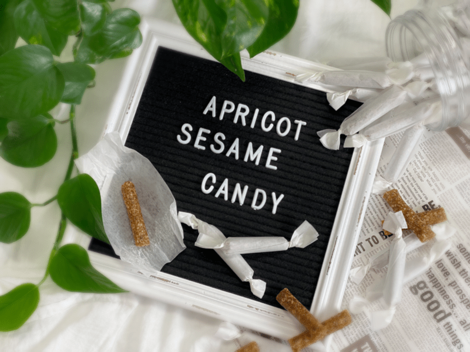
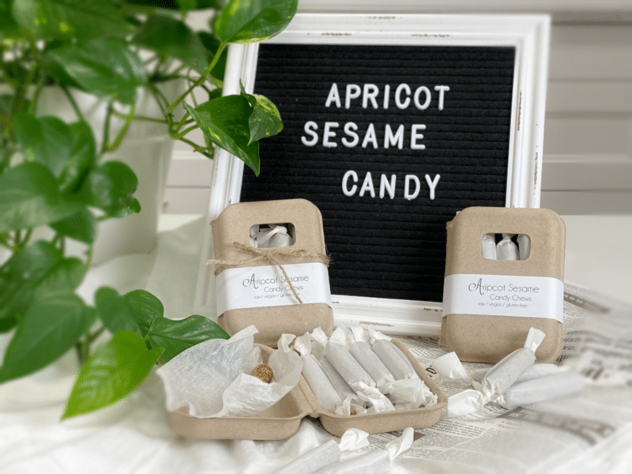
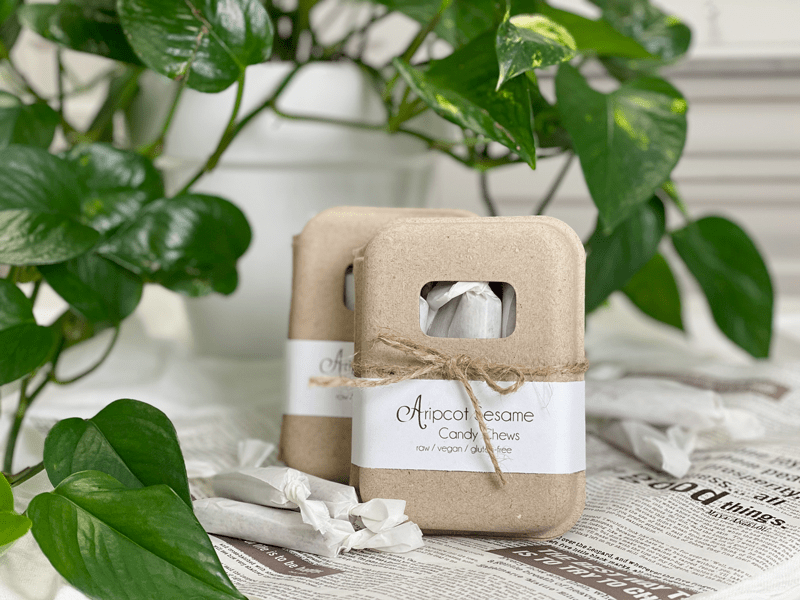

Apricot Sesame Candy Chews
raw / vegan / gluten-free / nut-free
Sesame seeds are tiny, flat oval seeds with a delicate nutty flavor. Their flavor indeed becomes more pronounced once they are gently roasted over low heat for just a few minutes. Oh dear, here I am on a raw recipe site talking about lightly roasting sesame seeds! Although my site is all about raw foods, it is also all about…

Creating healthy choices
I don’t have to tell you how passionate I am about raw foods… I think my site is a testament to that. BUT there are times when cooking food actually boosts its nutrients, as in this case. I did a post on this which can be found in the Reference Library (here).
Toasting verse Raw
Toasting sesame seeds alter their nutritional value. Studies show that the calcium levels are slightly higher when the seeds are toasted. Plus, for some, toasted sesame seeds are more comfortable to digest than the raw type.
But, I am going to leave this up to you. You can decide what is best for you… just promise me that you will never let the word “raw” be the deciding factor as to whether or not you will eat a food, over it being healthier for YOU. And when I say You… I am talking about your body, your digestive system, and your overall health. We all respond differently to foods. Ok, who put the “soapbox” out so I could step up on it??! hehe
If you decide to purchase raw sesame seeds, I am going to recommend soaking and dehydrating them first. Click (here) to learn how. This crucial soaking step unlocks the enzyme inhibitors, which would otherwise make it difficult for us to digest them. You might ask if you could just do the soaking process and skip the dehydration part, putting them straight into this recipe. I haven’t tried it, but I am guessing that the soft seeds would almost turn paste-like. Not the desired effect that we are looking for in this candy.

Open Sesame
Have you ever tried cracking a sesame seed in half, to see what was inside? In case you are curious but don’t have the patience to do so, let me start by telling you that the sesame seed is a mineral-rich powerhouse! Let’s see; there is copper for thyroid support, helps with maintaining bone health, and iron utilization. Magnesium for relaxing your nerves and muscles, build and strengthening bones, and keep blood circulating smoothly. They also provide us with high amounts of calcium for building a healthy bone matrix, helping clot the blood, and supporting muscle function. (source) Can you believe that all that is within the walls of that itty-bitty seed?
I should talk about this candy that we are making here. It does require a dehydrator and a good 24 hours of drying. Once they are removed and cooled, you can expect a sweet, chewy candy. My inspiration came from a childhood candy that I loved called Sesame Crunch. I didn’t nail the crunch factor, but that’s ok because I think I like these even better. I hope you enjoy this recipe and please share your experience with me.
 Ingredients:
Ingredients:
yields 60 candies (2″ long)
- 2 cups (375 g) diced dried apricots
- 1 1/2 cups (165 g) white sesame seeds
- 1/2 tsp (5 g) Himalayan pink salt
- 2 Tbsp (30 g) raw honey or raw coconut nectar
- 1 Tbsp (10 g) fresh lemon juice
Preparation:
- Place the apricots in enough warm water to cover them.
- Allow them to sit while you pull the remaining ingredients together to help soften them for blending purposes.
- In the food processor, fitted with the “S” blade, pulse together the sesame seeds and salt.
- Remove the lid from the processor and drizzle the honey around the bowl.
- You can use any other liquid sweetener to your liking.
- Add the lemon juice. Make sure it is fresh. The bottled kind gives raw treats more of a bitter taste.
- Drain and discard the soak water from the apricots.
- Hand squeeze the excess water out.
- Sprinkle the apricots around the bowl and replace the lid.
- Process all of the ingredients together until the batter is well mixed.
- Make sure that all the chunks of apricots are worked out.
- The batter needs to smooth to pipe it.
- Large chunks will plug the tip.
- Place the piping tip in the piping bag and slide into a tall wide mouth jar, fold the edges of the bag over the jar.
- Scoop the batter into the piping bag.
- Twist the bag shut, working out any air bubbles.
- Grab a dehydrator tray, lined with the mesh sheet only, and place the piping tip at a slight angle above the tray.
- With firm, consistent pressure, squeeze the batter out of the bag, sliding across the tray, creating a straight line from one end to the other.
- Repeat the process until all the batter is gone.
- I filled one 12 x 12 dehydrator tray.
- Dehydrate at 115 degrees (F) for 24 hours or until it reaches the desired consistency that you want.
- Once done, allow them to cool, then cut into 2″ pieces.
- Wrap each piece in wax paper to be enjoyed as candy.
- Or cut into nibble sizes and store in a jar. They will stick together so you can lightly dust them with oat flour to help with that.

© AmieSue.com